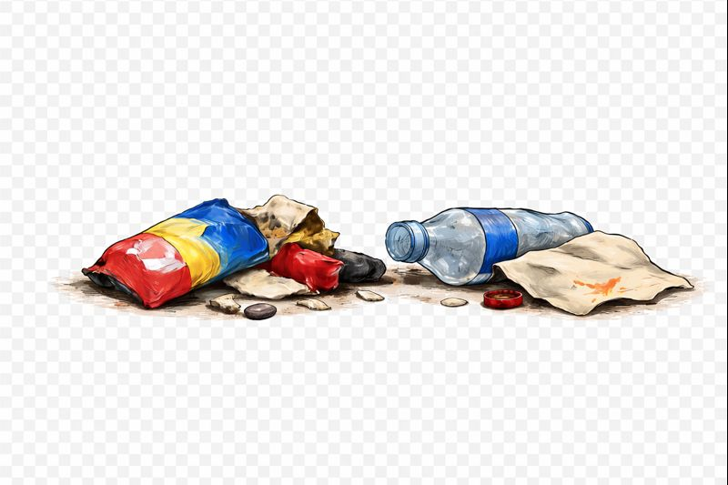

参加者内：シカ（背景：なし/あり）×目のマーク（あり/なし）＝4条件，各5試行（合計20試行）
卒業研究の実験です。奈良公園の場面で「ゴミをどう扱うか」に関する判断と反応時間を匿名で記録します。途中でやめても問題ありません。
※本実験はパソコンでの実施を想定しています（スマートフォンでは正しく表示されない場合があります）
※全部で20場面、所要時間は数分です。

お疲れさまでした。最後に結果の提出をお願いします。
①「結果をコピー」を押す ②「提出フォームへ」を押す ③ フォームに貼り付けて送信